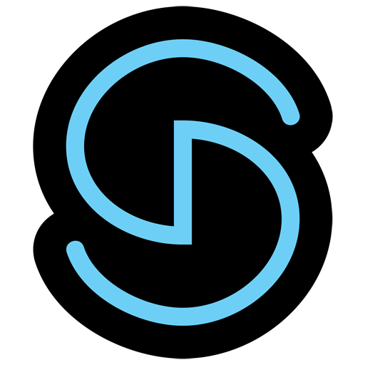
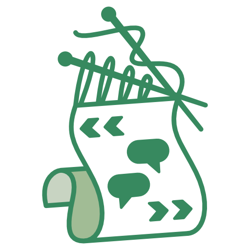
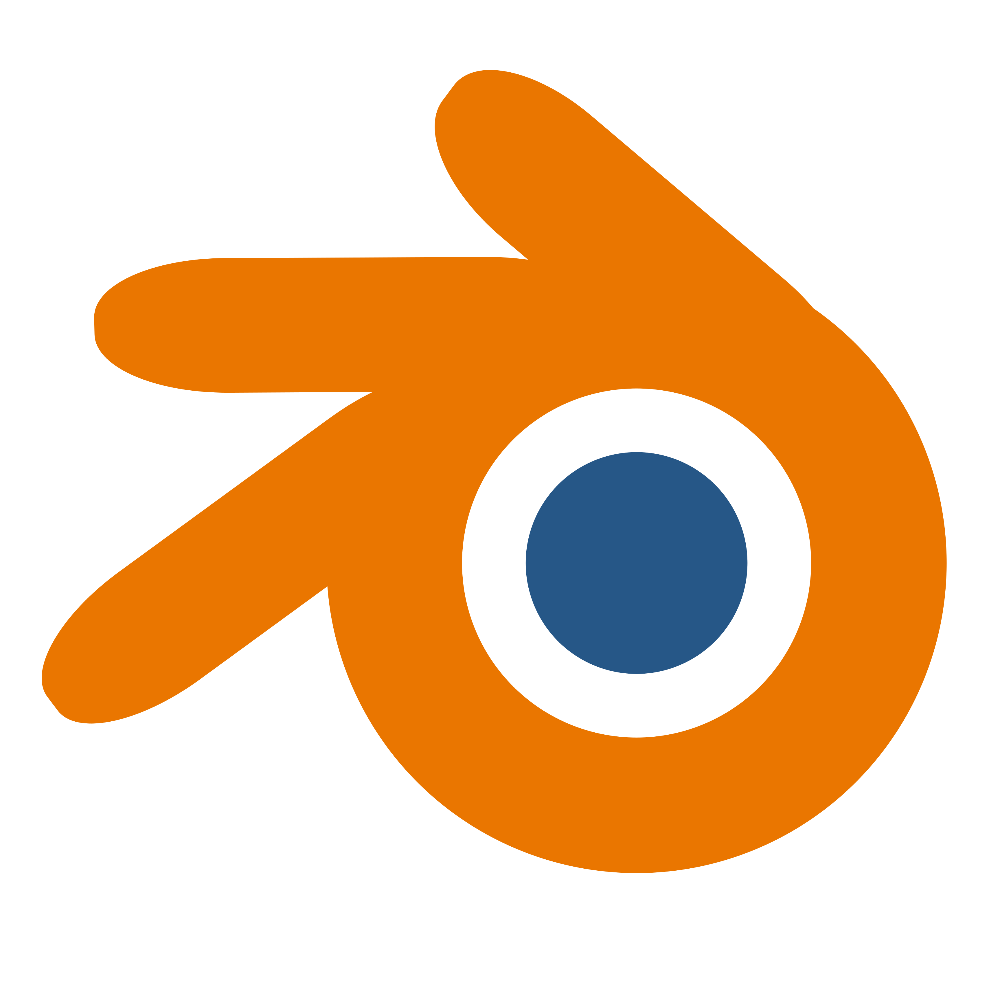

Above my burning passion for games, art and everything else, I care deeply about people. No game is worth a life, so it's our responsibility to make sure our pipelines, communication and processes are excellent! With this in mind, I bring a production-conscious attitude to all of my work, whether I'm directly involved in production or not.
I've been making games for over 7 years as of 2022: across many technologies, many collaborators, and multiple scales of production from weekend game jam to multiple-month long project. I find it incredibly uplifting to work with other creative minds in a space of mutual inspiration, and I love the challenge of a good technical problem. I truly adore the whole process: from creative, to technical, to interpersonal.
If you have need of a writer who can create their own tools, or a producer who can both design and implement their pipelines, or a programmer who likes people, then I'd love to chat!
Experience
Media Molecule | 2022
Work Integrated Learning program hosted by RMIT and Media Molecule. Experienced bringing a game from conception to release in simulated studio conditions alongside a large team of other students. Worked as dedicated producer.
Freeplay: Parallels | 2021
Wrote, filmed and edited a presentation on my game Monomyth for the world's longest running independent games festival.
Volunteering
Game-A-Week | 2022-2023
Hosted a six-week "game-a-week" program at RMIT University, based on the curriculum designed by Douglas Wilson.
PAX Panelist | 2022
Presented a curated list of comedically bad videogames live with the "Trash Enthusaists Society"
Blue Light Collective President | 2021
Planned and ran events, managed communications with other clubs and business partners, ran meetings and provided leadership for RMIT's first digital arts collective.
Game Jam Host | 2021
Hosted a three-day game jam for fellow RMIT Game Design students, encouraging creative exploration and community building during lockdown.
Skills
- Project Management
- Tool Programming
- Gameplay Programming
- Writing
- Game Design
- Web Development
- Video Production / Editing
Education
RMIT University
Bachelor of Design (Games).
Westpac 100
Young Technologists Scholarship and Leadership Program.
Media Molecule
Work Integrated Learning. Experienced bringing a game from conception to release in studio conditions.
Software
-
 Unity / C#
Unity / C#
-
 Git
Git
-
 Excel (The One True Game Design Tool)
Excel (The One True Game Design Tool)
-
 Notion
Notion
-
 HTML / CSS / Javascript
HTML / CSS / Javascript
-  FMOD
-  Yarn Spinner
-
 Gamemaker / GML
Gamemaker / GML
-  Blender
-
 Adobe Premiere
Adobe Premiere
-
 Adobe After Effects
Adobe After Effects